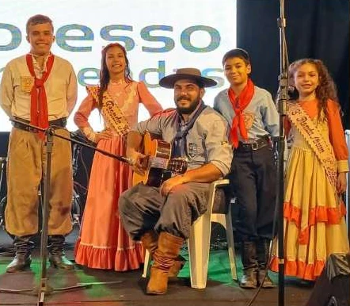
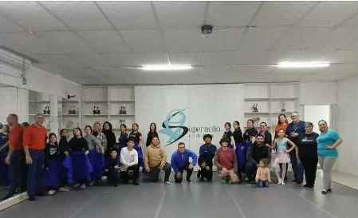

GTF Tropilha Crioula
Tradição que reúne.
Cultura que segue.
Entidade social que usa a cultura gaúcha como instrumento de inclusão, cidadania e solidariedade, em Sapucaia do Sul desde 2015.
Conheça a TropilhaNossa essência
Mais que um grupo artístico.
O GTF Tropilha Crioula é uma associação civil sem fins lucrativos, fundada em 15 de março de 2015. Promove, preserva e difunde o patrimônio cultural gaúcho por meio da arte, da educação patrimonial, da integração comunitária e da ação social.
Enquanto a maioria das entidades tradicionalistas mantém apenas invernadas artísticas, o Tropilha tem também uma Invernada Social, grupo permanente que conduz as ações sociais o ano inteiro.
Leia mais sobre a entidade →Em números
Resultados dos últimos 24 meses
Período de referência: agosto de 2024 a agosto de 2026.
Momentos
Tradição em ação


Cultura em movimento
Onde atuamos
Ação social e defesa de direitos
6 iniciativas · Invernada Social
Ver iniciativas →02Educação
1 iniciativa · Educação patrimonial e inclusão
Ver iniciativas →03Cultura e formação artística
6 iniciativas · Departamento Cultural e invernadas
Ver iniciativas →04Esporte e lazer
1 iniciativa · Esportes campeiros
Ver iniciativas →Vamos conversar
A comunidade começa
com um encontro.
Os canais oficiais de contato, endereço e redes sociais serão disponibilizados em breve.